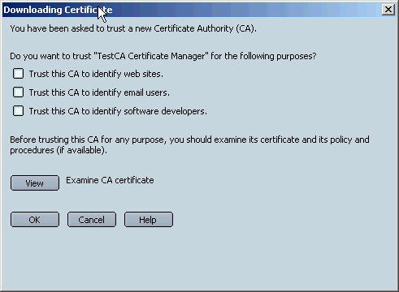
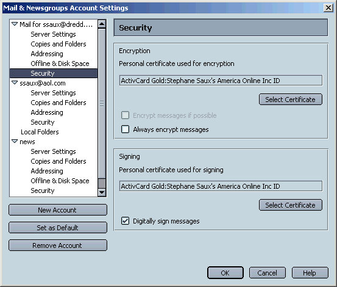
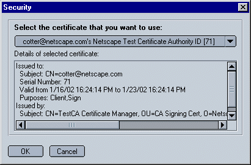
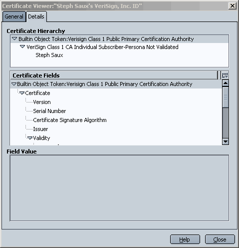
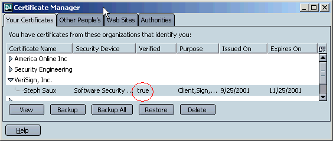

- Configure S/MIME on a per-email account basis.
- Receive and read S/MIME messages, albeit with a temporary and minimal UI.
- Send S/MIME messages with minimal UI controls.
- Set up your browser to use S/MIME.
- Sign and encrypt email.
- Test current functionality
- Use certificate-related UI.
- Troubleshoot.
Getting Started
Netscape has set up a public Test Certificate Authority (CA) specifically for the purpose of testing S/MIME in Mozilla nightly builds. This CA issues test certificates that expire after ten days. This section describes how to obtain dual-key test certificates from the CA and configure Mail & Newsgroups so you can send signed and encrypted email messages.
Download the CA Certificate and Configure S/MIME
To set up the browser for testing S/MIME and obtain the appropriate certificates from Netscape's test CA, follow these steps:
- Download a nightly build from http://ftp.mozilla.org/pub/mozilla/nightly that is later than 1/11/2001. S/MIME functionality should be considered alpha until further notice.
- Create a new profile and use the Mail & News Account Manager to create the Mail account you will use to test the feature. This is not strictly necessary (you could use an existing profile), but it will help us in reproducing any problem you may run into. In addition, since testing S/MIME involves importing certificates, using a separate profile will protect your existing profile should any certificate database corruption problems occur.
- Click this link to install the Netscape Test CA root certificate in your new
profile:
Download the Netscape Test CA Root Certificate now. You will see this dialog box:

Select the first two checkboxes, at a minimum. Doing so indicates that you trust this CA certificate to identify web sites and email users. You can then can visit the SSL server for the Netscape Test CA without triggering a warning. More importantly, selecting these trust settings also ensures that you can vaildate signed emails from other people whose certificates were issued by the Netscape Test CA.
- Go to the Netscape Test Certificate Authority site and follow the instructions to obtain personal dual-key certificates.
The Netscape Test Certificate Authority will issue you dual-key certificates. This means that you get two certificates: one used by other people to encrypt emails they send to you, and the other used by you to sign emails and to identify yourself to servers that require client authentication.
Note that it's possible to obtain a single certificate that supports signing and encryption. For example, free trial email certificates from Verisign support both signing and encryption. However, thorough testing of S/MIME requires testing dual-key certificates.
If you have problems obtaining a certificate from the Netscape Test Certificate Authority, send an email to testca-admin@netscape.com
Back up your certificates. You should also back up your test certificates. To do so, open the Certifiate Manager, select both your new certificates, and click Backup. This is very important. If something happens to your certificate database or you have any other problems, you will lose access to encrypted emails unless you can restore the backup copy of your certificates.
Examine Your Certificates and Test Client Authentication
Once you've obtained your test certificates, you should take a look at them using the Certificate Manager. Follow these steps:
- Open the Edit menu and choose Preferences.
- Under the Privacy & Security category, choose Certificates. (If no subcategories are visible, double-click the category to expand the list.)
- In the Manage Certificates section, click Manage Certificates.
For more information on many aspects of using certificates, open the Help menu, choose Help and Support Center, and double-click Using Certificates in the left frame. Current builds do not yet include S/MIME help, but you can find information on general certificate management.
Under the Your Certificates tab in the Certificate Manager, the 'Verified' column for your certificate must have the value "true" or you won't be able to use it. If the value for either of your dual-key certificates is not "true," see the Troubleshooting section of this document.
To test your signing certificate for client authentication, click this link and log into the test server: client authentication test server.
Normally the process of client authentication is transparent to the user. To see certificate request dialog, you must follow these steps before authenticating:
- Open the Edit menu and choose Preferences.
- Under the Privacy & Security category, click Certificates. (If no subcategories are visible, double-click the category to expand the list.)
- Under Client Certificate Selection, click Ask Every Time.
If you have previously authenticated to the test server during the same session, you will need to exit the browser, relaunch it, and visit the page (linked above) again.
Configure a Mail Account for S/MIME
To send signed or encrypted emails, you must first configuring your one of your mail accounts for S/MIME. Follow these steps:
- Open the Tasks menu and choose Mail & Newsgroups. (If you haven't alreaedy set up your mail account for the test profile, you will beasked to to so before you can proceed.)
- Open the Edit menu and choose Mail & Newsgroups Account Settings.
- In the left panel, identify the account you want to configure and click Security under the name of that account.
The Security panel contains two sections: Digital Signing and Encryption:

- The Digital Signing section allows you to select the certificate you want to use for signing email messages. The certificate you select is attached to every message you sign (including all encrypted messages), allowing the recipient to verify your digital signature. The signature is created using the private key for this certificate, which remains on your hard disk.
- The Encryption section allows you to select the certificate you want to use for encrypting email messages. This certificate is attached to every signed and/or encrypted message you send, so that all recipients can subsequently use it to encrypt emails they send to you. Decryptiopn is performed with the private key for this certificate, which remains on your hard disk.
- In the Digital Signing section, click Select.
This dialog box appears:

- Select the signing certificate you want to use for testing, then click OK.
- In the Digital Signing section, select the checkbox labeled "Digitally sign messages".
- In the Encryption section, click Select. You can then use a similar dialog box to select the certificate you want to use for encryption. (Note that the certificate selected for signing can be the same as the one used for encryption if the certificate supports both signing and encryption.) For now, leave the radio button labeled "Never" selected. You will still be able to encrypt messages on an individual basis.
- Click OK.
You must select both a signing certificate and an encryption certificate before you can start sending signed messages. When you sign a message, both your encryption and signing certificates are attached to theit, so that recipients can can both verify your digital signature and, if they wish, send you encrypted email.
You are now ready to send signed and encrypted messages.
Signing and Encrypting Email Messages
To digitally sign an email message, follow these steps:
- Click the Compose button (or reply to, or forward, an existing message).
A new Compose window opens.
- Open the Options menu, then the Security submenu.
If you followed the directions in this document exactly, you'll notice that Digitally Sign is already checked, because of the Mail & Newsgroup Account option you selected earlier.
If you want to digitally sign the message only, without encrypting it, you don't need to do anything with this menu (assuming that the Digitally Sign item is already selected). If you want to encrypt the message as well as signing it, select Always Encrypt. (In current builds, Always Encrypt applies to this Compose window only.)
- Address and compose your test message, then click Send.

When you receive a message, the right side of the heading area (in current builds) indicates whether the message is signed or signed and encrypted. (Encrypted messages are always signed.)
If you have configured S/MIME as described above, you can digitally sign any emailmessage. To encrypt a message, however, you must already have an encryption certificate for each of the recipients. The next section describes how to obtain recipients' certificates.
Obtaining Encryption Certificates for Email Recipients
The current S/MIME implementation provides two ways to obtain the encryption certificate that you need before you can send encrypted email to a given recipient.
- Have the recipient send you a signed or encrypted email. This can be done from Netscape Communicator or from a current Mozilla build. Most of the Mozilla community will use this method to obtain certificates from recipients.
- Some organizations provide an LDAP directory from which you
can obtain a user's certificate by clicking a link.
What To Test
Some suggestions for testing:
- Test the non-s/mime Mail & Newsgroup functionality for potential regressions that are attributable to the new feature. Please remember to validate that any regression does not also appear on the corresponding trunk build.
- Reading regular messages works.
- Sending regular messages works.
- Performance for opening messenger, a compose window, reply, forward.
- Impact on folders containing both s/mime and regular messages (sort by, compact, select, file, etc...
- search of folders.
- Test S/MIME features:
For each reading/sending test you run, please consider the following cases:
- Emails that you send yourself.
- Emails sent by others to you.
- Emails sent to multiple recipients.
- Emails that have attachments.
- Emails that were replies and forwards.
- Combinations of the above.
- Send and read from different mail clients.
- S/MIME functionality testing:
- Send a signed email. Recipients can read it and the signature is valid if they have followed the above setup.
- Send an encrypted email.
- Send a signed and encrypted email.
- Read a signed email.
- Read an encrypted email.
- Read a signed and encrypted email.
- Receiving and reading a signed email loads the sender's certificate, allowing you to encrypt the reply to the sender.
- Receiving and reading an encrypted email allows
you to click Reply All and send encrypted mail to all recipients after selecting the Always Encrypt option.
Appendix A: Viewing Certificates.
To open the Certificate Manager and perform basic management tasks, follow these steps:
- Open the Edit menu, choose Preferences, double-click Privacy & Security, click Certificates, then click Manage Certificates
- The Your Certificates tab should show your own S/MIME certificates. The Verified column should read "true" for your certificates. Go to the troubleshooting section if it doesn't.
- The Other People's tab shows you the certificates from other people (which are imported autoamtically when they send you a signed email).The Verified column should read "true" for these certificates too.
- The Authorities tab allows you to
view CA certificates and edit their trust settings.
- Double-click a certificate's name to view it.
- To edit a CA certificate's trust attributes, click the Authorities tab, select the certificate, and click Edit. For S/MIME testing, the root CA for the certs you use for S/MIME should be trusted for email certificates, at a minimum.
The Details tab of the Certificate Viewer shows the certificate hierarchy for the certificate chain. This is useful when you're attempting to locate a root CA certificate so you can edit its trust attributes.

For more information on many aspects of using certificates, click Help in any dialog box or open the Help menu, choose Help and Support Center, and double-click Using Certificates in the left frame. Current builds do not yet include S/MIME help, but you can find information on general certificate management.
Appendix B: Troubleshooting.
If you have problems reading or sending signed/encrypted messages, it's probably because the certficates used for the S/MIME operation that is failing are not "Verified,", which means that they do not chain to a trusted root. Due to some PSM bugs, importing a certificate may cause the root CA certificate to loose its trust settings (101616, 100386) These are not S/MIME bugs, and they're being worked on, but you'll need to work around them until they are fixed.
If your Free trial Verisign Cert does not verify, the Certificate ManagerWindow may look like this:

If this is the case, click the Authorities Tab and locate the root CA cert for Verisign personal email certificates:

When you select the root certificate and click Edit, you will see something like this:

Since none of the trust options are selected, your browser doesn't trust this certificate. This is due to a PSM bug. This CA certificate is normally built-in and trusted by the browser. To fix the problerm, select all three checkboxes, like this, then click OK:

If you go back to the Your Certificates tab, youll now see something like this:

Once you have done this, your certificate is trusted, and you can sign your emails. Other people's Verisign certificates will also be trusted, and you'll be